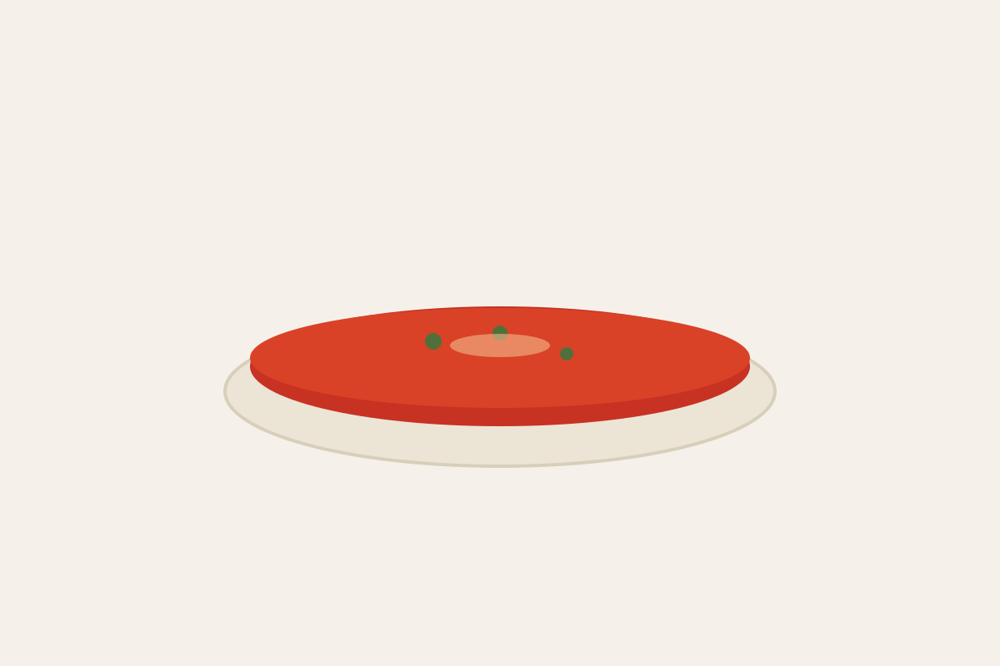

Recetas

Sopa de tomate clásica
Una sopa cremosa que resalta todo el sabor de nuestro Redondo Liso.
Próximamente
Esta receta se publicará muy pronto.
Próximamente

Una sopa cremosa que resalta todo el sabor de nuestro Redondo Liso.